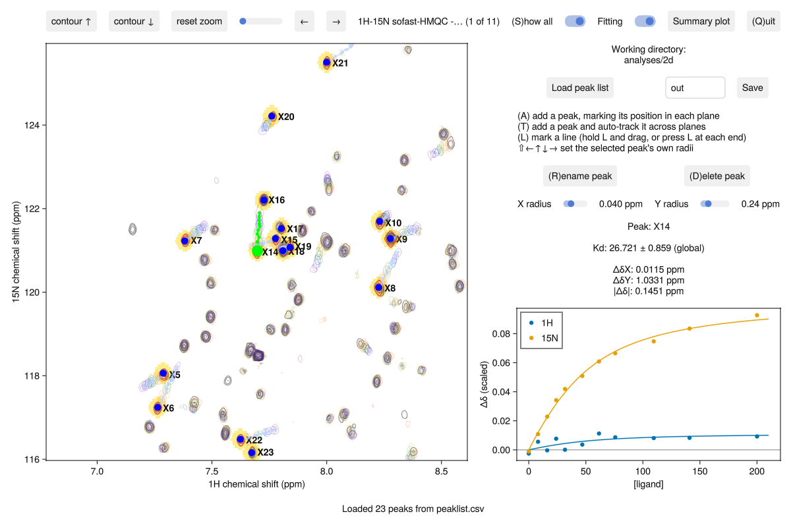

Titrations
titration2d fits a 1:1 binding isotherm to the chemical shift perturbations in a titration series, with one dissociation constant shared by every residue, and the free and bound shifts of each residue in each dimension.
For $P + L \rightleftharpoons PL$, the observed shift moves from the free shift towards the bound one in proportion to the fraction of protein bound, $f$:
\[\Delta\delta = f \,(\delta_\text{bound} - \delta_\text{free}).\]
Given the ligand concentrations $L_\text{T}$ alone, the free ligand is taken to be the total, and
\[f = \frac{L_\text{T}}{K_\text{d} + L_\text{T}}.\]
Given the protein concentrations $P_\text{T}$ as well, the exact solution is used, which accounts for ligand depletion and dilution:
\[f = \frac{1}{2P_\text{T}}\left(P_\text{T} + L_\text{T} + K_\text{d} - \sqrt{(P_\text{T} + L_\text{T} + K_\text{d})^2 - 4\,P_\text{T} L_\text{T}}\right).\]
Usage
using NMRAnalysis
titration2d(1:11)
titration2d(1:11; L0=[0, 10, 20, 40, 80, 160], P0=[50, 49, 48, 46, 43, 38])L0 and P0 are the total ligand and protein concentrations in each plane, in any unit, as long as it's the same for both. $K_\text{d}$ comes out in that unit. Without them, they're read from the sample metadata of each experiment: the plane whose sample holds only one molecule is the free protein, and the other molecule named is the ligand. The concentrations found are printed as a table before the window opens. If the roles can't be worked out, you're asked.
Peaks move from plane to plane, so they're added as in Peak tracking: T to add a peak and follow it through the planes, or L to place it along a line. Label peaks with residue numbers, such as L23, for the summary plot.
Example
The FIR RRM1–RRM2 domains titrated with the Nbox peptide. The concentrations are in the sample metadata:
titration2d(example("titration2d_fir_nbox"))
Output
Save writes the global $K_\text{d}$ to global.csv, these parameters for each peak to results.csv, and a plot of each peak's shifts and fitted isotherm to peaks/. See Output for the other files.
| Parameter | Meaning |
|---|---|
Xfree, Yfree | Free shifts, ppm |
Xbound, Ybound | Bound shifts, ppm |
dX, dY | Shift changes on binding, ppm |
CSP | Combined shift perturbation, ppm |
For the example, $K_\text{d}$ is
\[26.72 \pm 0.86\]
and the shift changes begin:
| label | dX | dY | CSP |
|---|---|---|---|
| X1 | 0.1119 | 1.144 | 0.1954 |
| X2 | 0.1071 | 0.04556 | 0.1073 |
| X3 | -0.1404 | -0.3036 | 0.1467 |
| X4 | 0.006437 | -0.03995 | 0.008527 |
| X5 | -0.1008 | -0.3202 | 0.1103 |
| X6 | 0.09231 | 1.109 | 0.1807 |
| … |
With residue numbers in the peak labels, such as L23, summary.pdf plots the shift changes against residue number.
The combined perturbation weights the two dimensions (Williamson, Prog. Nucl. Magn. Reson. Spectrosc. 73, 1 (2013)):
\[|\Delta\delta| = \sqrt{(w_x\,\Delta\delta_x)^2 + (w_y\,\Delta\delta_y)^2}.\]
The weights keyword sets $(w_x, w_y)$: (1.0, 0.14) by default, for ¹H and ¹⁵N, or about (1.0, 0.25) for ¹H and ¹³C. They affect only this combined value, not the fit.